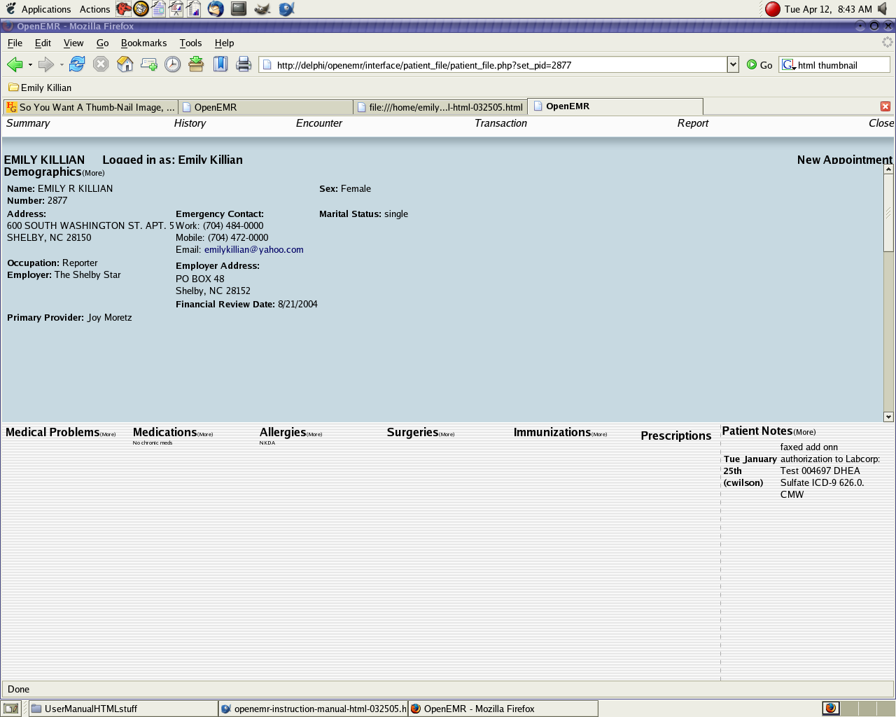

PATIENT MEDICAL DATA
Updating medical problems list
Click on medical problems along the bottom rail.
To add a problem, click in the top input box.
Extra notes can be added in the bottom input box.
Click on add new medical problem.
When finished, click back or close.
Please click on the following thumbnail for a more detailed picture.

Updating medications list
Click on medications along the bottom rail.
To add a medication, click in the top input box.
The medication name should go in the top box and additional information should go in the bottom box.
Click on add new medication to save.
When finished, click back or close.
Please click on the following thumbnail for a more detailed picture.
Updating allergies list
Click on allergies along the bottom rail.
To add an allergy, click in the top input box. Extra notes can be added in the bottom input box.
Click on add new allergy.
When finished, click back or close.
Please click on the following thumbnail for a more detailed picture.
Updating surgeries list
Click on surgeries along the bottom rail.
To add a surgery, click in the top input box.
Extra notes can be added in the bottom input box.
Click on add new surgery.
When finished, click back or close.
Please click on the following thumbnail for a more detailed picture.
Updating immunizations list
Click on immunizations along the bottom rail.
To add an immunization, click in the top input box.
Extra notes can be added in the bottom input box.
Click on add new immunization.
When finished, click back or close.
Please click on the following thumbnail for a more detailed picture.
Back Index Next
{kind=link}